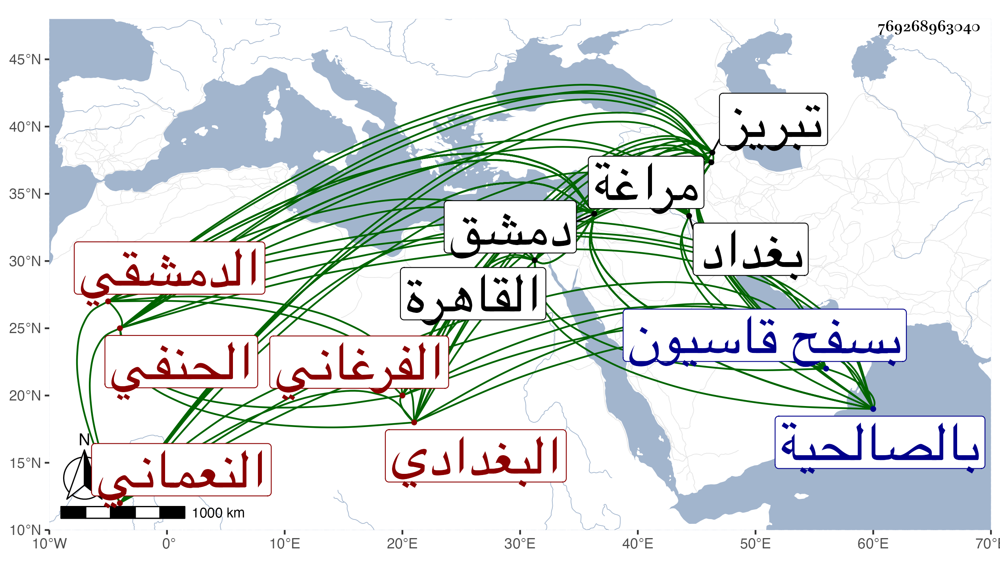

0902Sakhawi.DawLamic.ITO20230111-ara1.EIS1600.769268963040
Biography ID: 769268963040
98
محمد بن أحمد بن محمد بن أحمد بن عمر بن محمد بن ثابت بن عثمان بن محمد بن عبد الرحمن بن ميمون حميد الدين أبو المعالي بن التاج النعماني نسبة للإمام أبي حنيفة النعمان البغدادي الأصل الفرغاني الدمشقي الحنفي الماضي أبوه مع سياق نسبه ويعرف بحميد الدين . ولد في سابع عشري صفر سنة خمس وثمانمائة بمراغة من أعمال تبريز ونشأ ببغداد وتفقه فيها على أبيه والشريف عبد المحسن البخاري وتحول مع أبيه لدمشق في أواخر ذي القعدة سنة إحدى وعشرين ثم دخل القاهرة في التي تليها فتفقه فيها بالشمس بن الديري والعز عبد السلام البغدادي قرأ عليه في الكشف الصغير ثم عاد لدمشق سنة أربع وعشرين وقطنها وتفقه بها على العلاء البخاري والشرف قاسم العلائي ولازم أولهما نحو ثمان سنين واقتصر على ملازمته وأخذ عنه علم الشريعة والطريقة وسائر فنون المعقولات ، وولى قضاء الحنفية بدمشق في سنة ثلاث وخمسين عوضا عن الحسام بن العماد وصرف عنه غير مرة ، وكذا حج مرارا أولهما في سنة ثمان عشرة مع أبيه وآخرها في سنة أربع وستين وأسمع فيها صاحبنا ابن فهد أولاده وغيرهم عليه بعض ترتيب مسانيد أبي حنيفة للخوارزمي رواه لهم عن أبيه بالسند الذي أورده شيخنا في جده حسام بن أحمد من سنة ثلاث وثمانين من أنبائه ، وكتب له صاحب الترجمة في ترجمة نفس حاصل ما أثبته وقال أنه ولي تداريس وأنظارا عدة كالعزية والخاتونية والمرشدية والمعينية والسيفية والقصاعين وأنه ألف الرد على ابن تيمية في الاعتقادات وشرحا للكنز لم يكمل بل شرع في شرح للهداية وأن له عدة رسائل في مسائل ، وكان عالما بالنحو والصرف والمعاني والبيان والأصول وغيرها مشاركا في الفقه ، بلغنا أن العلاء البخاري كان يقول للشهاب الكوراني حين قراءته عليه وبحثه معه اصبر إلى أن يجيء حميد الدين فهو الحكم بيننا ، وله ذكر في حوادث سنة أربع وأربعين من أنباء شيخنا وطعن في نسبه . مات في ليلة الأحد سادس ربيع الأول سنة سبع وستين بالمدرسة المعينية من دمشق وصلى عليه من الغد بجامع يلبغا ثم بالصالحية ودفن بسفح قاسيون رحمه الله وإيانا . قال شيخنا : وكان أبوه يدعى أنه من ذرية الإمام أبي حنيفة وأملى لنفسه نسبا إلى يوسف بن أبي حنيفة كتبه عن التقي المقريزي يعرف من له أدنى ممارسة بالأخبار تلفيقه والله الموفق .
